Florida Stand Your Ground Law: What You Need to Know
Published January 12, 2026 | By Jeff Lotter
You've heard the phrase "Stand Your Ground," but do you actually understand when it applies? Many people think it's a license to use force in any confrontation. It's not. Here's what Florida law actually says.
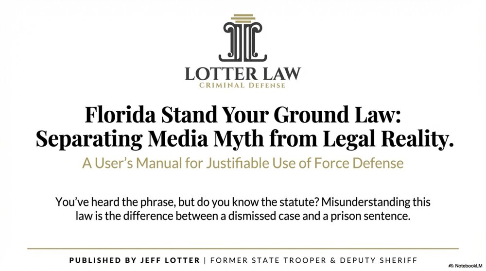
Florida's Stand Your Ground law is one of the most misunderstood self-defense statutes in the country. Media coverage often simplifies it to "you don't have to retreat," but that's only part of the story.
The law provides critical protections for people who use force in legitimate self-defense situations. But it also has strict requirements and limitations that courts take seriously. If you're facing criminal charges and considering a Stand Your Ground defense, you need to understand what the law actually requires—not what you've heard on TV.
The Key Takeaway
Florida's Stand Your Ground law (F.S. 776.012 and 776.013) removes the duty to retreat before using force in self-defense. But you still must reasonably believe force is necessary to prevent imminent death, great bodily harm, or a forcible felony. And if you were the initial aggressor or engaged in criminal activity, Stand Your Ground doesn't apply.
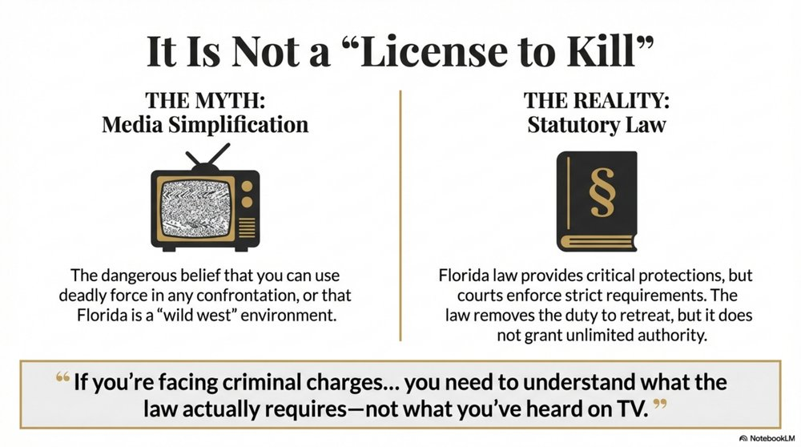
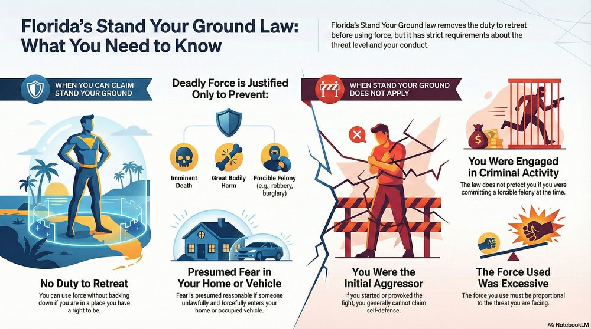
What Is Florida's Stand Your Ground Law?
Florida Statutes 776.012 and 776.013 establish the legal framework for using force—including deadly force—in self-defense.
Before Stand Your Ground laws, many states required a person to retreat if they could do so safely before using force. Florida's law removes that obligation.
Florida Statute 776.012: Use of Force in Defense of Person
Under F.S. 776.012, a person is justified in using or threatening to use non-deadly force when they reasonably believe it is necessary to defend themselves or another against someone else's imminent use of unlawful force.
A person is justified in using or threatening to use deadly force only if they reasonably believe such force is necessary to prevent:
- Imminent death or great bodily harm to themselves or another person, or
- The imminent commission of a forcible felony (such as robbery, burglary, aggravated assault, sexual battery, etc.)
Importantly, a person using lawful force has no duty to retreat as long as they are in a place where they have a right to be and are not engaged in criminal activity.
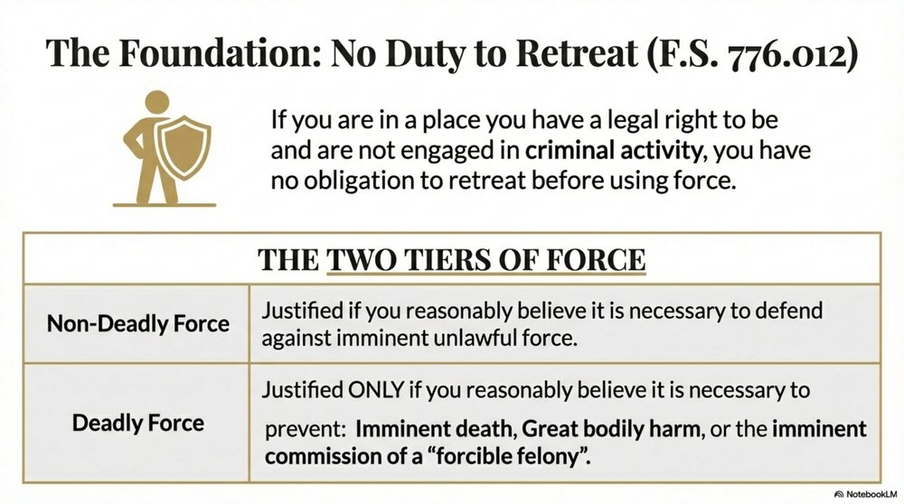
Florida Statute 776.013: Home Protection; Use of Deadly Force
F.S. 776.013 extends protections to people in their dwelling, residence, or occupied vehicle.
The law creates a presumption of reasonable fear when someone unlawfully and forcefully enters (or attempts to enter) your home or occupied vehicle. In those situations, you are presumed to have a reasonable fear of imminent death or great bodily harm.
This presumption does not apply if:
- The person entering has a legal right to be there (like a co-owner or invited guest)
- The person is a law enforcement officer performing official duties and has identified themselves
- You are engaged in criminal activity or using the dwelling for criminal purposes
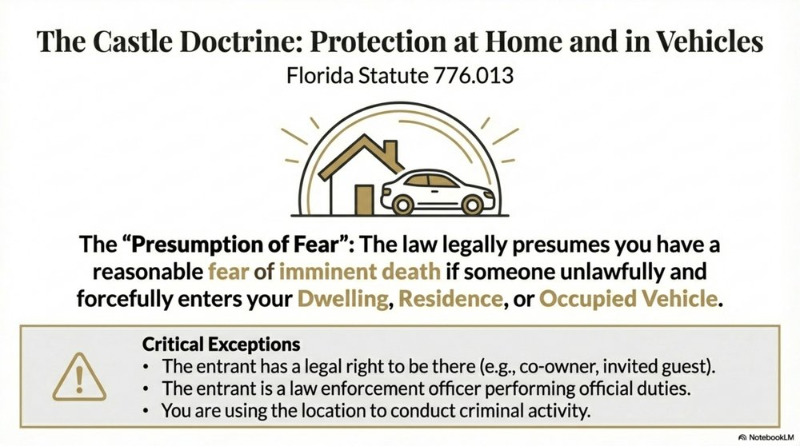
When Can You Claim Stand Your Ground?
Not every use of force qualifies for Stand Your Ground protection. Florida law sets clear requirements:
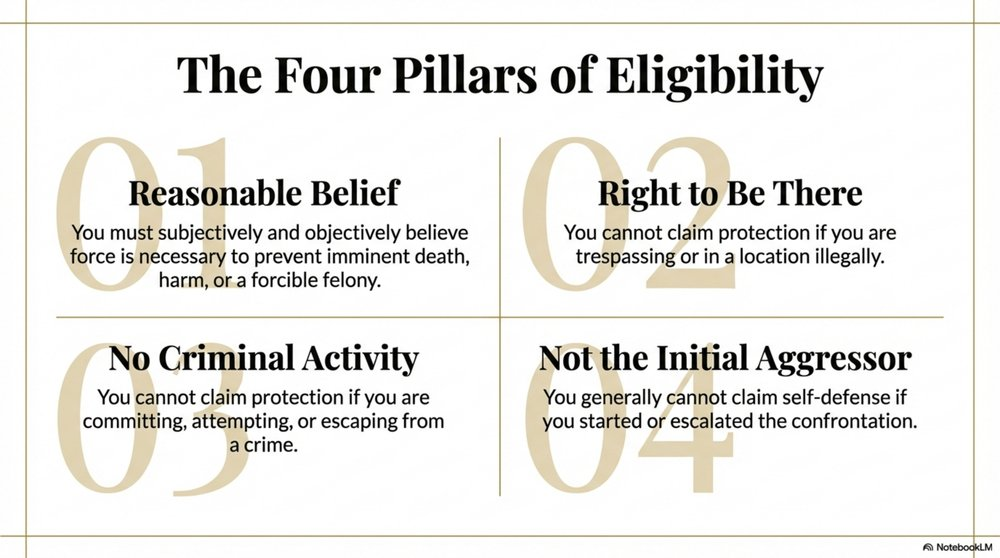
1. Reasonable Belief of Imminent Threat
You must reasonably believe that force is necessary to prevent imminent death, great bodily harm, or a forcible felony. This is both a subjective and objective test:
- Subjective: You must have actually believed the threat was imminent
- Objective: A reasonable person in your situation would have also believed force was necessary
"Imminent" means the threat is immediate. A vague future threat, insults, or someone simply being aggressive doesn't justify deadly force.
2. You're in a Place You Have a Right to Be
You cannot claim Stand Your Ground if you're trespassing or in a location where you have no legal right to be.
3. You're Not Engaged in Criminal Activity
If you're committing, attempting to commit, or escaping after committing a forcible felony, you cannot claim self-defense under Stand Your Ground.
This is a critical limitation. If you're actively engaged in criminal conduct when you use force, Stand Your Ground doesn't protect you—even if you would otherwise meet the requirements.
4. You're Not the Initial Aggressor
If you started the confrontation, escalated it, or provoked the other person into using force, you generally cannot claim Stand Your Ground.
However, if you clearly withdraw from the confrontation and communicate your intent to stop fighting, you may regain the right to self-defense if the other person continues to attack you.
Proportionality Matters
The force you use must be proportional to the threat. If someone pushes you in an argument, you can't pull out a gun and shoot them. Deadly force is only justified when you reasonably believe deadly force or great bodily harm is imminent. Using excessive force undermines your self-defense claim.
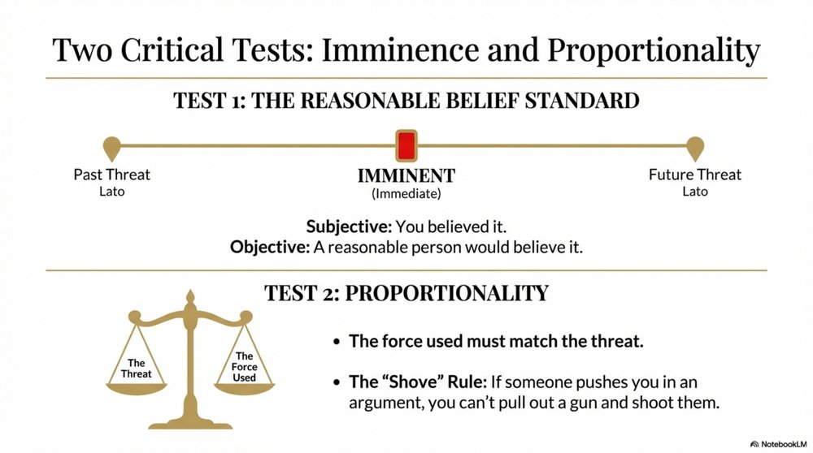
When Stand Your Ground Does NOT Apply
Many people assume Stand Your Ground applies broadly. It doesn't. Here's when you cannot claim Stand Your Ground immunity:
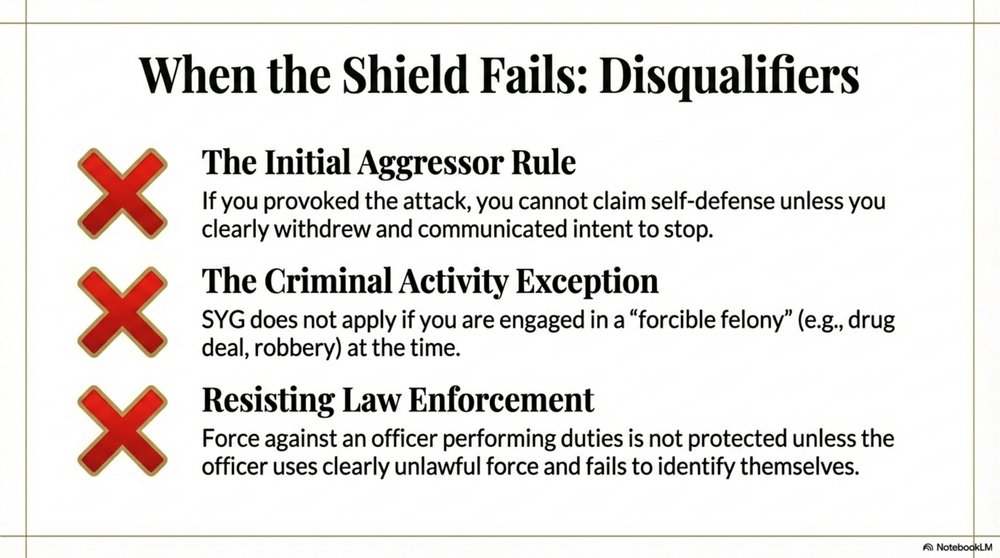
1. You Were the Initial Aggressor
If you started the fight or provoked the confrontation, you can't claim self-defense. Provoking someone into attacking you, then using force against them, doesn't qualify for Stand Your Ground protection.
2. You Were Committing a Crime
Stand Your Ground doesn't protect you if you were engaged in a forcible felony at the time you used force. Examples:
- You're robbing a store, and the clerk pulls a weapon—you can't claim self-defense
- You're selling drugs, someone tries to rob you—no Stand Your Ground protection
- You're trespassing on private property—no immunity
3. You Used Force Against Law Enforcement
Stand Your Ground does not apply when you use force against a law enforcement officer performing their official duties—even if you claim the officer used excessive force.
The only exception: if the officer was using clearly unlawful force and did not identify themselves as law enforcement.
4. The Threat Was Not Imminent
Stand Your Ground requires an imminent threat. If someone threatened you yesterday and you confronted them today, that's not imminent. If someone is leaving the scene and no longer poses a threat, you can't use force.
5. You Used Excessive Force
Even if you were legally justified in using some force, using more force than was reasonably necessary can cost you Stand Your Ground immunity.
Example: If someone punches you and you respond by shooting them, a jury might find that deadly force was not reasonable in response to non-deadly force.
Common Misconception
Stand Your Ground is not a "license to kill." You still need to prove self-defense. The law simply removes the duty to retreat—it doesn't give you unlimited authority to use force in any confrontation.
The Stand Your Ground Immunity Hearing
One of the most important features of Florida's Stand Your Ground law is the immunity hearing. This is a pre-trial proceeding where a defendant can seek immunity from criminal prosecution.
If you win immunity, your case is dismissed—you don't go to trial. This is huge. Unlike an acquittal at trial, immunity means you avoid the risk, expense, and uncertainty of a jury trial entirely.
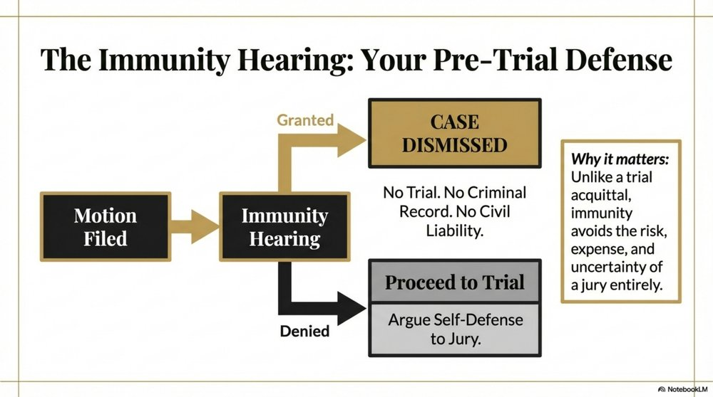
How the Immunity Hearing Works
In 2017, Florida amended F.S. 776.032 to shift the burden of proof to the State. Here's the process:
- Defendant files a motion for Stand Your Ground immunity
- Defendant presents a prima facie case—basic evidence showing they acted in self-defense
- Burden shifts to the State—the prosecution must prove by clear and convincing evidence that the defendant is not entitled to immunity
- Judge decides—the judge (not a jury) determines whether Stand Your Ground applies
Clear and Convincing Evidence
This is a higher standard than the "preponderance of the evidence" used in most civil cases, though lower than "beyond a reasonable doubt." It means the State must show it is substantially more likely than not that you don't qualify for immunity.
Why the Immunity Hearing Matters
If the judge grants immunity:
- Charges dismissed — case over, no trial
- No criminal record — no conviction
- Immunity from civil liability — you can't be sued by the person you used force against (in most cases)
If the judge denies immunity, the case proceeds to trial. You can still raise self-defense as a defense at trial, but you'll face a jury.
Historical Context: The 2017 Amendment
Before 2017, the defendant had the burden of proving they were entitled to Stand Your Ground immunity by a preponderance of the evidence. In 2017, the Florida Legislature shifted that burden to the State and raised the standard to "clear and convincing evidence."
This change made it significantly easier for defendants to win immunity hearings.
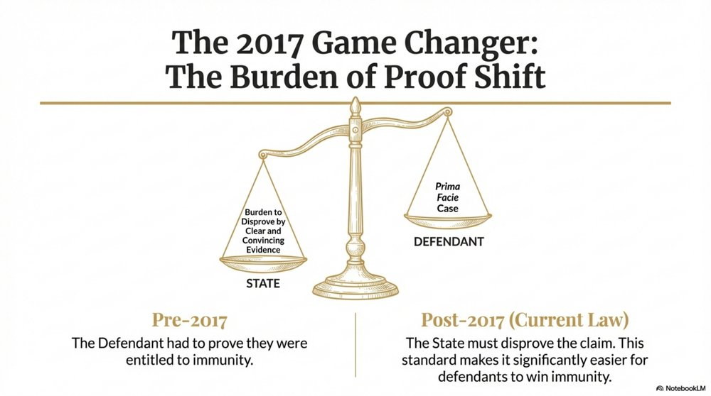
Common Misconceptions About Stand Your Ground
Misunderstandings about Stand Your Ground can lead to bad decisions—and criminal charges. Let's clear up the most common myths:
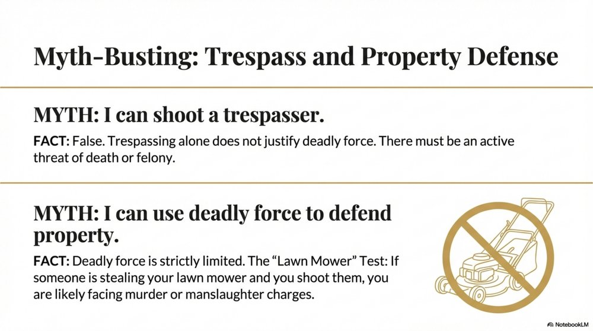
Myth 1: "I can shoot anyone who trespasses on my property."
False. You can't use deadly force just because someone is on your property. Deadly force is only justified if you reasonably believe it's necessary to prevent imminent death, great bodily harm, or a forcible felony.
Trespassing alone doesn't justify shooting someone.
Myth 2: "Stand Your Ground means I never have to retreat."
Partially true. Stand Your Ground removes the legal duty to retreat. But that doesn't mean retreating is never the smart choice. If you can safely walk away from a confrontation, doing so can prevent criminal charges altogether.
Just because you don't have a legal duty to retreat doesn't mean you should escalate a situation when you could avoid it.
Myth 3: "If I claim Stand Your Ground, I automatically get immunity."
False. Winning a Stand Your Ground immunity hearing is not automatic. The State will present evidence to challenge your claim. Judges carefully review the facts, and many Stand Your Ground motions are denied.
Myth 4: "I can use deadly force to defend my property."
Not quite. Florida law allows the use of non-deadly force to protect property. But deadly force is only justified to prevent:
- Imminent death or great bodily harm, or
- A forcible felony (like robbery or burglary)
If someone is stealing your lawn mower and you shoot them, you're likely facing murder or manslaughter charges.
Myth 5: "Stand Your Ground is a 'get out of jail free' card."
Absolutely false. Stand Your Ground is a defense you must prove. The State will challenge it. Witnesses will be called. Evidence will be scrutinized. You still need to convince a judge (or jury) that you acted lawfully.
What to Do If You Use Force in Self-Defense
If you're involved in a self-defense situation where you use or threaten force, here's what you should do:
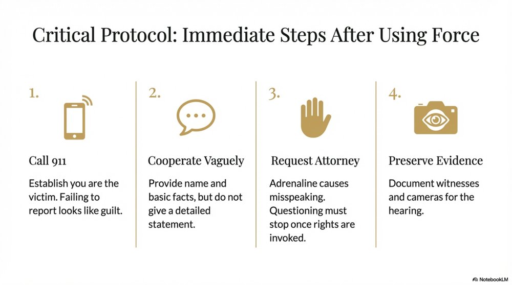
1. Call 911 Immediately
Report the incident. If you were defending yourself, you want law enforcement to know you're the victim, not the aggressor. Failing to report can make you look guilty.
2. Cooperate, But Don't Over-Explain
Provide basic information—your name, that you were defending yourself, that you want to cooperate. But do not give a detailed statement without a lawyer.
Even truthful statements can be misinterpreted or used against you. Adrenaline and stress can cause you to misspeak. Wait for legal representation.
3. Request an Attorney
Once you invoke your right to an attorney, police must stop questioning you. This protects you from making statements that could hurt your Stand Your Ground claim.
4. Preserve Evidence
If there are witnesses, security cameras, or physical evidence, make sure it's documented. Your attorney will need this for your Stand Your Ground hearing.
Do Not Talk About Your Case on Social Media
Anything you post online can and will be used against you. Prosecutors search social media for statements that contradict your self-defense claim. Stay silent until your case is resolved.
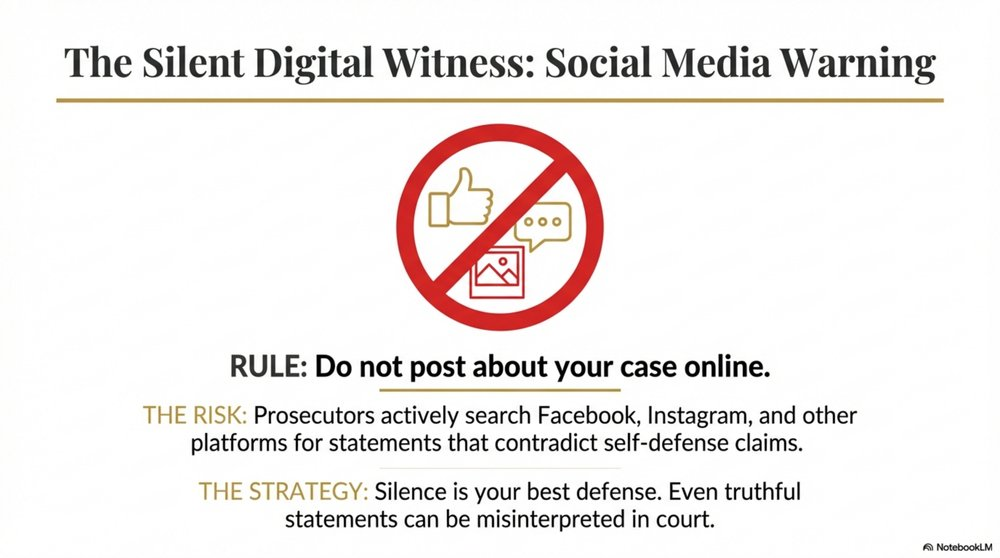
How a Criminal Defense Attorney Can Help
Stand Your Ground cases require experienced legal representation. A defense attorney can:
- Evaluate your case — Determine whether Stand Your Ground applies to your situation
- File the immunity motion — Navigate the procedural requirements and present your prima facie case
- Challenge the State's evidence — Cross-examine witnesses and dispute the prosecution's version of events
- Argue for dismissal — Present legal arguments for why the charges should be dropped
- Prepare for trial if needed — If immunity is denied, your attorney will prepare a self-defense strategy for trial
As a former Florida Highway Patrol Trooper and former Deputy Sheriff, I understand how law enforcement investigates self-defense cases. I know what prosecutors look for and how to build a strong Stand Your Ground defense.
Related Resources
- Chapter 776 - Florida Statutes on Justifiable Use of Force
- Florida Statute 776.012 - Use of Force in Defense of Person
- Florida Statute 776.013 - Home Protection
- Florida Statute 776.032 - Immunity from Prosecution
Facing Criminal Charges After Using Force in Self-Defense?
Stand Your Ground cases require experienced legal representation. Don't wait—immunity hearings must be filed early in the case.
Former State Trooper | Former Deputy Sheriff | Experienced in Self-Defense Cases
Law Office of Jeff Lotter PLLC
200 E Robinson St Suite 1140, Orlando, FL 32801